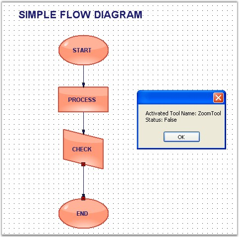
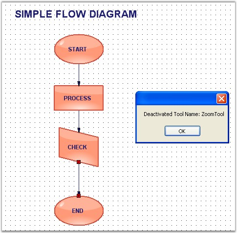

The below events gets fired while activating or deactivating the UI tools (Zoom, Pan, Select etc) in the diagram.
The below table shows all the Tool Events.
|
DiagramViewerEventSink |
Description |
|
ToolActivated |
Triggered when UI tool is activated. |
|
ToolDeactivated |
Triggered when UI tool is deactivated. |
Data can be retrieved or set using the following members.
|
ToolActivated / Deactivated EventArgs Members |
Description |
|
Tool |
Returns the tools object that generated the event. It has following properties,
· Name - Name of the Tool. |
In the below code sample, when a tool is activated or deactivated the corresponding event will be raised, and the tool name along with the status will be displayed.
|
[C#]
private void Form1_Load(object sender, EventArgs e) { ((DiagramViewerEventSink)diagram1.EventSink).ToolActivated += new ToolEventHandler(DiagramForm_ToolActivated);
((DiagramViewerEventSink)diagram1.EventSink).ToolDeactivated += new ToolEventHandler(Form1_ToolDeactivated);
diagram1.Controller.ActivateTool("ZoomTool"); }
void Form1_ToolDeactivated(ToolEventArgs e) { MessageBox.Show("Deactivated Tool Name: " + e.Tool.Name);
} private void DiagramForm_ToolActivated(ToolEventArgs e) { MessageBox.Show("Activated Tool Name: " + e.Tool.Name + "\n" + "Status: " + e.Tool.InAction);
} |
|
[VB]
Private Sub Form1_Load(ByVal sender As Object, ByVal e As EventArgs) AddHandler DirectCast(diagram1.EventSink, DiagramViewerEventSink).ToolActivated, AddressOf DiagramForm_ToolActivated
AddHandler DirectCast(diagram1.EventSink, DiagramViewerEventSink).ToolDeactivated, AddressOf Form1_ToolDeactivated
diagram1.Controller.ActivateTool("ZoomTool") End Sub
Private Sub Form1_ToolDeactivated(ByVal e As ToolEventArgs)
MessageBox.Show("Deactivated Tool Name: " & e.Tool.Name) End Sub Private Sub DiagramForm_ToolActivated(ByVal e As ToolEventArgs)
MessageBox.Show(("Activated Tool Name: " & e.Tool.Name & vbLf & "Status: ") + e.Tool.InAction) End Sub |
Sample diagrams are as follows,

Figure 97: Tool Activated Event

Figure 98: Tool Deactivated Event